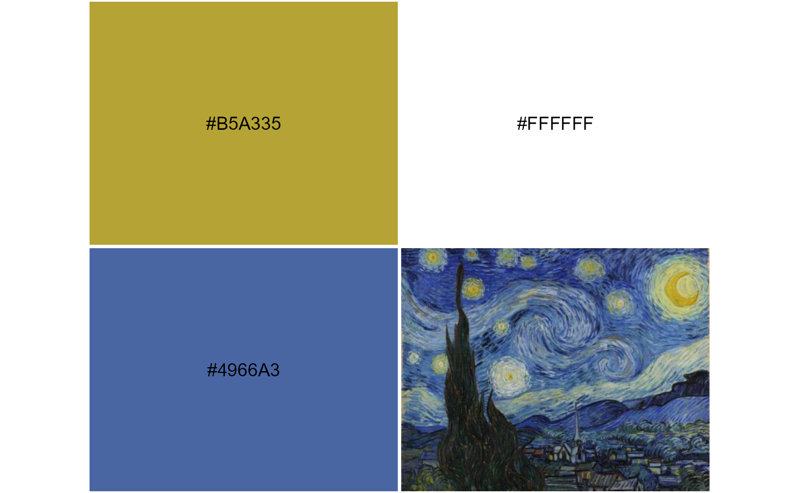

Derive qualitative, sequential and divergent color palettes from an image on disk or at a URL.
image_pal( file, n = 9, type = c("qual", "seq", "div"), k = 100, bw = c(0, 1), brightness = c(0, 1), saturation = c(0, 1), seq_by = "hsv", div_center = "#FFFFFF", seed = NULL, plot = FALSE, labels = TRUE, label_size = 1, label_color = "#000000", keep_asp = TRUE, quantize = FALSE )
| file | character, file path or URL to an image. |
|---|---|
| n | integer, number of colors. |
| type | character, type of palette: qualitative, sequential or divergent ( |
| k | integer, the number of k-means cluster centers to consider in the image. See details. |
| bw | a numeric vector of length two giving the lower and upper quantiles to trim trim near-black and near-white colors in RGB space. |
| brightness | as above, trim possible colors based on brightness in HSV space. |
| saturation | as above, trim possible colors based on saturation in HSV space. |
| seq_by | character, sort sequential palette by HSV dimensions in a specific order, e.g., |
| div_center | character, color used for divergent palette center, defaults to white. |
| seed | numeric, set the seed for reproducible results. |
| plot | logical, plot the palette. |
| labels | logical, show hex color values in plot. |
| label_size | numeric, label size in plot. |
| label_color | text label color. |
| keep_asp | logical, adjust rectangles in plot to use the image aspect ratio. |
| quantize | logical, quantize the reference thumbnail image in the plot using the derived color palette. See |
character vector of hex colors, optionally draws a plot
Ordering colors is a challenging problem. There are many ways to do it; none are perfect. Color is a multi-dimensional property; any reduction to a a one dimensional color spectrum necessarily removes information.
Creating a sequential palette from an arbitrary image that contains several hues, at different saturation and brightness levels, and making a palette that looks sequential is particularly problematic. This function does a decent job of creating qualitative, sequential and divergent palettes from images, but additional tweaking of function arguments is needed on a case by case basis. This can include trimming the extreme values of the color distribution in terms of brightness, saturation and presence of near-black/white colors as pre-processing steps. There is also variation in possible palettes from a given image, depending on the image complexity and other properties, though you can set the random seed for reproducibility.
The number of k-means centers k defines the maximum number of unique colors to consider in the image for color binning prior to palette construction.
This is different from n, the number of colors are desired in the derived palette. It is limited by the number of unique colors in the image.
Larger k may allow for better palette construction under some conditions, but takes longer to run.
k applies to sequential and qualitative palettes, but not divergent palettes.
Some pre-processing can be done to limit undesirable colors from ending up in a palette.
bw specifically drops near-black and near-white colors as soon as the image is loaded by looking at the average values in RGB space.
brightness and saturation trimming are applied subsequently to trim lower and upper quantiles of the HSV value and saturation, respectively.
If you have already trimmed black and white, keep in mind these two arguments will trim further from what remains of the color distribution.
Keep in mind that many images simple do not make sense to try to derive sensible color palettes from.
For images that do lend themselves to a useful color palette derivation, some may only make sense to consider for a divergent palette, or an increasing/decreasing sequential palette,
or only a qualitative palette if there are too many colors that are difficult to order.
For divergent palettes in particular, it is recommended to trim white, e.g. bw = c(0, 0.9), depending on the white space of a given image, since the divergent palettes are centered on white.
seq_by = "hsv" orders the final palette by hue, then saturation, then value (brightness). This default is not meant to be ideal for all images.
It work better in cases where sequential palettes may contain several distinct hues, but not much variation in saturation or brightness.
However, for example, palettes derived from an image with relatively little variation in hue may appear more sorted to the human eye if ordered by hue last using "svh" or "vsh",
depending on whether you want the palette to appear to transition more from lower saturation or lower brightness to the predominant hue.
set.seed(1) x <- system.file("blue-yellow.jpg", package = "imgpalr") # Focus on bright, saturated colors for divergent palette: image_pal(x, n = 3, type = "div", saturation = c(0.75, 1), brightness = c(0.75, 1), plot = TRUE)#> [1] "#4A66A2" "#FFFFFF" "#B4A337"# \donttest{ image_pal(x, n = 5, type = "seq", k = 2, saturation = c(0.5, 1), brightness = c(0.25, 1), seq_by = "hsv")#> [1] "#A8A44D" "#8E905A" "#747D68" "#596A76" "#405784"# }